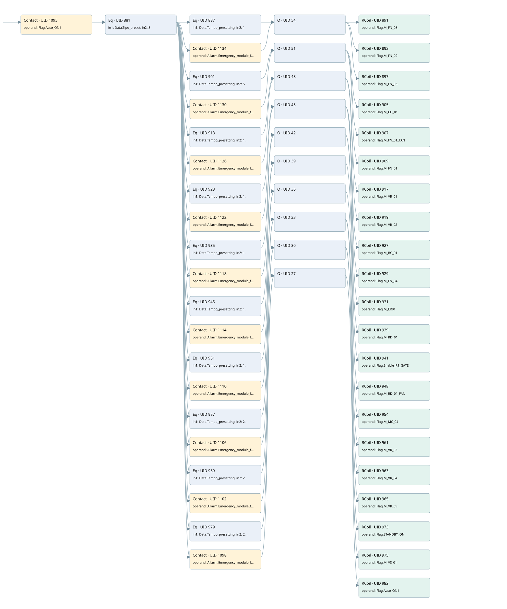

presetting sequence 5: complete engine stop
auto start motors · 검색 색인 순서 7 · 원본 내부 NID 추정 5
백업 PLF 원본의 2667930 바이트 위치에서 복원한 XML. 검색 문서 1847의 객체 키 16102200c510000000000000와 연결했다. 이름 해석 54/54개. 남은 RefId는 상수 또는 미해석 참조다.
연결 구조 다시 그리기
원본 Part/PCon/Wire를 이용한 연결도다. TIA 화면의 래더 배치 또는 실행 결과를 재현한 그림은 아니다. 핀 연결은 아래 표와 원본 XML을 기준으로 읽는다. 노드 위에 마우스를 두면 피연산자 이름을 볼 수 있다.

접점·코일·블록과 피연산자
| Part UID | Gate | Negated 핀 | 연결 피연산자 |
|---|---|---|---|
| 1095 | Contact | operand = Flag.Auto_ON1 | |
| 881 | Eq | in1 = Data.Tipo_preset; in2 = 5 | |
| 887 | Eq | in1 = Data.Tempo_presetting; in2 = 1 | |
| 1134 | Contact | operand = Allarm.Emergency_module_fault | |
| 54 | O | ||
| 891 | RCoil | operand = Flag.M_FN_03 | |
| 893 | RCoil | operand = Flag.M_FN_02 | |
| 897 | RCoil | operand = Flag.M_FN_06 | |
| 901 | Eq | in1 = Data.Tempo_presetting; in2 = 5 | |
| 1130 | Contact | operand = Allarm.Emergency_module_fault | |
| 51 | O | ||
| 905 | RCoil | operand = Flag.M_CH_01 | |
| 907 | RCoil | operand = Flag.M_FN_01_FAN | |
| 909 | RCoil | operand = Flag.M_FN_01 | |
| 913 | Eq | in1 = Data.Tempo_presetting; in2 = 11 | |
| 1126 | Contact | operand = Allarm.Emergency_module_fault | |
| 48 | O | ||
| 917 | RCoil | operand = Flag.M_VR_01 | |
| 919 | RCoil | operand = Flag.M_VR_02 | |
| 923 | Eq | in1 = Data.Tempo_presetting; in2 = 13 | |
| 1122 | Contact | operand = Allarm.Emergency_module_fault | |
| 45 | O | ||
| 927 | RCoil | operand = Flag.M_BC_01 | |
| 929 | RCoil | operand = Flag.M_FN_04 | |
| 931 | RCoil | operand = Flag.M_ER01 | |
| 935 | Eq | in1 = Data.Tempo_presetting; in2 = 15 | |
| 1118 | Contact | operand = Allarm.Emergency_module_fault | |
| 42 | O | ||
| 939 | RCoil | operand = Flag.M_RD_01 | |
| 941 | RCoil | operand = Flag.Enable_R1_GATE | |
| 945 | Eq | in1 = Data.Tempo_presetting; in2 = 17 | |
| 1114 | Contact | operand = Allarm.Emergency_module_fault | |
| 39 | O | ||
| 948 | RCoil | operand = Flag.M_RD_01_FAN | |
| 951 | Eq | in1 = Data.Tempo_presetting; in2 = 19 | |
| 1110 | Contact | operand = Allarm.Emergency_module_fault | |
| 36 | O | ||
| 954 | RCoil | operand = Flag.M_MC_04 | |
| 957 | Eq | in1 = Data.Tempo_presetting; in2 = 20 | |
| 1106 | Contact | operand = Allarm.Emergency_module_fault | |
| 33 | O | ||
| 961 | RCoil | operand = Flag.M_VR_03 | |
| 963 | RCoil | operand = Flag.M_VR_04 | |
| 965 | RCoil | operand = Flag.M_VR_05 | |
| 969 | Eq | in1 = Data.Tempo_presetting; in2 = 21 | |
| 1102 | Contact | operand = Allarm.Emergency_module_fault | |
| 30 | O | ||
| 973 | RCoil | operand = Flag.STANDBY_ON | |
| 975 | RCoil | operand = Flag.M_VS_01 | |
| 979 | Eq | in1 = Data.Tempo_presetting; in2 = 25 | |
| 1098 | Contact | operand = Allarm.Emergency_module_fault | |
| 27 | O | ||
| 982 | RCoil | operand = Flag.Auto_ON1 |
접점 경로를 펼친 조건식
Contact·O/A·비교기의 원본 연결을 읽기 쉽게 펼친 보조 해석이다. POWER는 전원 레일 시작을 뜻한다. 호출 블록·에지·타이머의 내부 동작과 다중 쓰기 순서는 이 표로 실행 검증하지 않았다. 미해석 핀과 RefId는 원문 연결표에서 확인한다.
| UID | 동작 | 대상 | 원본 접점 경로 | 내용 |
|---|---|---|---|---|
| 891 | RCoil | Flag.M_FN_03 | (((Flag.Auto_ON1 AND [Data.Tipo_preset = 5]) AND [Data.Tempo_presetting = 1]) OR ((Flag.Auto_ON1 AND [Data.Tipo_preset = 5]) AND Allarm.Emergency_module_fault)) | 조건 성립 시 Reset |
| 893 | RCoil | Flag.M_FN_02 | (((Flag.Auto_ON1 AND [Data.Tipo_preset = 5]) AND [Data.Tempo_presetting = 1]) OR ((Flag.Auto_ON1 AND [Data.Tipo_preset = 5]) AND Allarm.Emergency_module_fault)) | 조건 성립 시 Reset |
| 897 | RCoil | Flag.M_FN_06 | (((Flag.Auto_ON1 AND [Data.Tipo_preset = 5]) AND [Data.Tempo_presetting = 1]) OR ((Flag.Auto_ON1 AND [Data.Tipo_preset = 5]) AND Allarm.Emergency_module_fault)) | 조건 성립 시 Reset |
| 905 | RCoil | Flag.M_CH_01 | (((Flag.Auto_ON1 AND [Data.Tipo_preset = 5]) AND [Data.Tempo_presetting = 5]) OR ((Flag.Auto_ON1 AND [Data.Tipo_preset = 5]) AND Allarm.Emergency_module_fault)) | 조건 성립 시 Reset |
| 907 | RCoil | Flag.M_FN_01_FAN | (((Flag.Auto_ON1 AND [Data.Tipo_preset = 5]) AND [Data.Tempo_presetting = 5]) OR ((Flag.Auto_ON1 AND [Data.Tipo_preset = 5]) AND Allarm.Emergency_module_fault)) | 조건 성립 시 Reset |
| 909 | RCoil | Flag.M_FN_01 | (((Flag.Auto_ON1 AND [Data.Tipo_preset = 5]) AND [Data.Tempo_presetting = 5]) OR ((Flag.Auto_ON1 AND [Data.Tipo_preset = 5]) AND Allarm.Emergency_module_fault)) | 조건 성립 시 Reset |
| 917 | RCoil | Flag.M_VR_01 | (((Flag.Auto_ON1 AND [Data.Tipo_preset = 5]) AND [Data.Tempo_presetting = 11]) OR ((Flag.Auto_ON1 AND [Data.Tipo_preset = 5]) AND Allarm.Emergency_module_fault)) | 조건 성립 시 Reset |
| 919 | RCoil | Flag.M_VR_02 | (((Flag.Auto_ON1 AND [Data.Tipo_preset = 5]) AND [Data.Tempo_presetting = 11]) OR ((Flag.Auto_ON1 AND [Data.Tipo_preset = 5]) AND Allarm.Emergency_module_fault)) | 조건 성립 시 Reset |
| 927 | RCoil | Flag.M_BC_01 | (((Flag.Auto_ON1 AND [Data.Tipo_preset = 5]) AND [Data.Tempo_presetting = 13]) OR ((Flag.Auto_ON1 AND [Data.Tipo_preset = 5]) AND Allarm.Emergency_module_fault)) | 조건 성립 시 Reset |
| 929 | RCoil | Flag.M_FN_04 | (((Flag.Auto_ON1 AND [Data.Tipo_preset = 5]) AND [Data.Tempo_presetting = 13]) OR ((Flag.Auto_ON1 AND [Data.Tipo_preset = 5]) AND Allarm.Emergency_module_fault)) | 조건 성립 시 Reset |
| 931 | RCoil | Flag.M_ER01 | (((Flag.Auto_ON1 AND [Data.Tipo_preset = 5]) AND [Data.Tempo_presetting = 13]) OR ((Flag.Auto_ON1 AND [Data.Tipo_preset = 5]) AND Allarm.Emergency_module_fault)) | 조건 성립 시 Reset |
| 939 | RCoil | Flag.M_RD_01 | (((Flag.Auto_ON1 AND [Data.Tipo_preset = 5]) AND [Data.Tempo_presetting = 15]) OR ((Flag.Auto_ON1 AND [Data.Tipo_preset = 5]) AND Allarm.Emergency_module_fault)) | 조건 성립 시 Reset |
| 941 | RCoil | Flag.Enable_R1_GATE | (((Flag.Auto_ON1 AND [Data.Tipo_preset = 5]) AND [Data.Tempo_presetting = 15]) OR ((Flag.Auto_ON1 AND [Data.Tipo_preset = 5]) AND Allarm.Emergency_module_fault)) | 조건 성립 시 Reset |
| 948 | RCoil | Flag.M_RD_01_FAN | (((Flag.Auto_ON1 AND [Data.Tipo_preset = 5]) AND [Data.Tempo_presetting = 17]) OR ((Flag.Auto_ON1 AND [Data.Tipo_preset = 5]) AND Allarm.Emergency_module_fault)) | 조건 성립 시 Reset |
| 954 | RCoil | Flag.M_MC_04 | (((Flag.Auto_ON1 AND [Data.Tipo_preset = 5]) AND [Data.Tempo_presetting = 19]) OR ((Flag.Auto_ON1 AND [Data.Tipo_preset = 5]) AND Allarm.Emergency_module_fault)) | 조건 성립 시 Reset |
| 961 | RCoil | Flag.M_VR_03 | (((Flag.Auto_ON1 AND [Data.Tipo_preset = 5]) AND [Data.Tempo_presetting = 20]) OR ((Flag.Auto_ON1 AND [Data.Tipo_preset = 5]) AND Allarm.Emergency_module_fault)) | 조건 성립 시 Reset |
| 963 | RCoil | Flag.M_VR_04 | (((Flag.Auto_ON1 AND [Data.Tipo_preset = 5]) AND [Data.Tempo_presetting = 20]) OR ((Flag.Auto_ON1 AND [Data.Tipo_preset = 5]) AND Allarm.Emergency_module_fault)) | 조건 성립 시 Reset |
| 965 | RCoil | Flag.M_VR_05 | (((Flag.Auto_ON1 AND [Data.Tipo_preset = 5]) AND [Data.Tempo_presetting = 20]) OR ((Flag.Auto_ON1 AND [Data.Tipo_preset = 5]) AND Allarm.Emergency_module_fault)) | 조건 성립 시 Reset |
| 973 | RCoil | Flag.STANDBY_ON | (((Flag.Auto_ON1 AND [Data.Tipo_preset = 5]) AND [Data.Tempo_presetting = 21]) OR ((Flag.Auto_ON1 AND [Data.Tipo_preset = 5]) AND Allarm.Emergency_module_fault)) | 조건 성립 시 Reset |
| 975 | RCoil | Flag.M_VS_01 | (((Flag.Auto_ON1 AND [Data.Tipo_preset = 5]) AND [Data.Tempo_presetting = 21]) OR ((Flag.Auto_ON1 AND [Data.Tipo_preset = 5]) AND Allarm.Emergency_module_fault)) | 조건 성립 시 Reset |
| 982 | RCoil | Flag.Auto_ON1 | (((Flag.Auto_ON1 AND [Data.Tipo_preset = 5]) AND [Data.Tempo_presetting = 25]) OR ((Flag.Auto_ON1 AND [Data.Tipo_preset = 5]) AND Allarm.Emergency_module_fault)) | 조건 성립 시 Reset |
원본 배선 연결
| Wire UID | 동일 Wire 연결 끝점 |
|---|---|
| 1097 | Powerrail {} ↔ Part 1095.in |
| 1028 | ORef 983 (Flag.Auto_ON1) ↔ Part 1095.operand |
| 26 | Part 1095.out ↔ Part 881.pre |
| 1029 | ORef 984 (Data.Tipo_preset) ↔ Part 881.in1 |
| 1030 | ORef 985 (5) ↔ Part 881.in2 |
| 1031 | Part 881.out ↔ Part 887.pre ↔ Part 1134.in ↔ Part 901.pre ↔ Part 1130.in ↔ Part 913.pre ↔ Part 1126.in ↔ Part 923.pre ↔ Part 1122.in ↔ Part 935.pre ↔ Part 1118.in ↔ Part 945.pre ↔ Part 1114.in ↔ Part 951.pre ↔ Part 1110.in ↔ Part 957.pre ↔ Part 1106.in ↔ Part 969.pre ↔ Part 1102.in ↔ Part 979.pre ↔ Part 1098.in |
| 1032 | ORef 986 (Data.Tempo_presetting) ↔ Part 887.in1 |
| 1033 | ORef 987 (1) ↔ Part 887.in2 |
| 55 | Part 887.out ↔ Part 54.in1 |
| 1137 | ORef 1135 (Allarm.Emergency_module_fault) ↔ Part 1134.operand |
| 56 | Part 1134.out ↔ Part 54.in2 |
| 1034 | Part 54.out ↔ Part 891.in ↔ Part 893.in ↔ Part 897.in |
| 1035 | ORef 988 (Flag.M_FN_03) ↔ Part 891.operand |
| 1036 | ORef 989 (Flag.M_FN_02) ↔ Part 893.operand |
| 1038 | ORef 991 (Flag.M_FN_06) ↔ Part 897.operand |
| 1040 | ORef 992 (Data.Tempo_presetting) ↔ Part 901.in1 |
| 1041 | ORef 993 (5) ↔ Part 901.in2 |
| 52 | Part 901.out ↔ Part 51.in1 |
| 1133 | ORef 1131 (Allarm.Emergency_module_fault) ↔ Part 1130.operand |
| 53 | Part 1130.out ↔ Part 51.in2 |
| 1042 | Part 51.out ↔ Part 905.in ↔ Part 907.in ↔ Part 909.in |
| 1043 | ORef 994 (Flag.M_CH_01) ↔ Part 905.operand |
| 1044 | ORef 995 (Flag.M_FN_01_FAN) ↔ Part 907.operand |
| 1045 | ORef 996 (Flag.M_FN_01) ↔ Part 909.operand |
| 1047 | ORef 997 (Data.Tempo_presetting) ↔ Part 913.in1 |
| 1048 | ORef 998 (11) ↔ Part 913.in2 |
| 49 | Part 913.out ↔ Part 48.in1 |
| 1129 | ORef 1127 (Allarm.Emergency_module_fault) ↔ Part 1126.operand |
| 50 | Part 1126.out ↔ Part 48.in2 |
| 1049 | Part 48.out ↔ Part 917.in ↔ Part 919.in |
| 1050 | ORef 999 (Flag.M_VR_01) ↔ Part 917.operand |
| 1051 | ORef 1000 (Flag.M_VR_02) ↔ Part 919.operand |
| 1053 | ORef 1001 (Data.Tempo_presetting) ↔ Part 923.in1 |
| 1054 | ORef 1002 (13) ↔ Part 923.in2 |
| 46 | Part 923.out ↔ Part 45.in1 |
| 1125 | ORef 1123 (Allarm.Emergency_module_fault) ↔ Part 1122.operand |
| 47 | Part 1122.out ↔ Part 45.in2 |
| 1055 | Part 45.out ↔ Part 927.in ↔ Part 929.in ↔ Part 931.in |
| 1056 | ORef 1003 (Flag.M_BC_01) ↔ Part 927.operand |
| 1057 | ORef 1004 (Flag.M_FN_04) ↔ Part 929.operand |
| 1058 | ORef 1005 (Flag.M_ER01) ↔ Part 931.operand |
| 1060 | ORef 1006 (Data.Tempo_presetting) ↔ Part 935.in1 |
| 1061 | ORef 1007 (15) ↔ Part 935.in2 |
| 43 | Part 935.out ↔ Part 42.in1 |
| 1121 | ORef 1119 (Allarm.Emergency_module_fault) ↔ Part 1118.operand |
| 44 | Part 1118.out ↔ Part 42.in2 |
| 1062 | Part 42.out ↔ Part 939.in ↔ Part 941.in |
| 1063 | ORef 1008 (Flag.M_RD_01) ↔ Part 939.operand |
| 1064 | ORef 1009 (Flag.Enable_R1_GATE) ↔ Part 941.operand |
| 1066 | ORef 1010 (Data.Tempo_presetting) ↔ Part 945.in1 |
| 1067 | ORef 1011 (17) ↔ Part 945.in2 |
| 1068 | Part 945.out ↔ Part 39.in1 |
| 1117 | ORef 1115 (Allarm.Emergency_module_fault) ↔ Part 1114.operand |
| 40 | Part 1114.out ↔ Part 39.in2 |
| 41 | Part 39.out ↔ Part 948.in |
| 1070 | ORef 1012 (Flag.M_RD_01_FAN) ↔ Part 948.operand |
| 1071 | ORef 1013 (Data.Tempo_presetting) ↔ Part 951.in1 |
| 1072 | ORef 1014 (19) ↔ Part 951.in2 |
| 1073 | Part 951.out ↔ Part 36.in1 |
| 1113 | ORef 1111 (Allarm.Emergency_module_fault) ↔ Part 1110.operand |
| 37 | Part 1110.out ↔ Part 36.in2 |
| 38 | Part 36.out ↔ Part 954.in |
| 1075 | ORef 1015 (Flag.M_MC_04) ↔ Part 954.operand |
| 1076 | ORef 1016 (Data.Tempo_presetting) ↔ Part 957.in1 |
| 1077 | ORef 1017 (20) ↔ Part 957.in2 |
| 34 | Part 957.out ↔ Part 33.in1 |
| 1109 | ORef 1107 (Allarm.Emergency_module_fault) ↔ Part 1106.operand |
| 35 | Part 1106.out ↔ Part 33.in2 |
| 1078 | Part 33.out ↔ Part 961.in ↔ Part 963.in ↔ Part 965.in |
| 1079 | ORef 1018 (Flag.M_VR_03) ↔ Part 961.operand |
| 1080 | ORef 1019 (Flag.M_VR_04) ↔ Part 963.operand |
| 1081 | ORef 1020 (Flag.M_VR_05) ↔ Part 965.operand |
| 1083 | ORef 1021 (Data.Tempo_presetting) ↔ Part 969.in1 |
| 1084 | ORef 1022 (21) ↔ Part 969.in2 |
| 31 | Part 969.out ↔ Part 30.in1 |
| 1105 | ORef 1103 (Allarm.Emergency_module_fault) ↔ Part 1102.operand |
| 32 | Part 1102.out ↔ Part 30.in2 |
| 1085 | Part 30.out ↔ Part 973.in ↔ Part 975.in |
| 1086 | ORef 1023 (Flag.STANDBY_ON) ↔ Part 973.operand |
| 1087 | ORef 1024 (Flag.M_VS_01) ↔ Part 975.operand |
| 1089 | ORef 1025 (Data.Tempo_presetting) ↔ Part 979.in1 |
| 1090 | ORef 1026 (25) ↔ Part 979.in2 |
| 1091 | Part 979.out ↔ Part 27.in1 |
| 1101 | ORef 1099 (Allarm.Emergency_module_fault) ↔ Part 1098.operand |
| 28 | Part 1098.out ↔ Part 27.in2 |
| 29 | Part 27.out ↔ Part 982.in |
| 1093 | ORef 1027 (Flag.Auto_ON1) ↔ Part 982.operand |
식별자 해석 근거 54개
| ORef UID | RefId | 이름 | IdentXmlPart 파일 | 해석 방법 |
|---|---|---|---|---|
| 983 | 4 | Flag.Auto_ON1 | 0577-IdentXmlPart.xml | UID/RID + search-text + NID agreement |
| 984 | 12 | Data.Tipo_preset | 0577-IdentXmlPart.xml | UID/RID + search-text + NID agreement |
| 985 | 22 | 5 | 0578-IdentXmlPart.xml | literal candidate: UID/RID/NID + nearby named declarations + search-text agreement |
| 986 | 7 | Data.Tempo_presetting | 0577-IdentXmlPart.xml | UID/RID + search-text + NID agreement |
| 987 | 8 | 1 | 0578-IdentXmlPart.xml | literal candidate: UID/RID/NID + nearby named declarations + search-text agreement |
| 1135 | 108 | Allarm.Emergency_module_fault | 0577-IdentXmlPart.xml | UID/RID + search-text + NID agreement |
| 988 | 64 | Flag.M_FN_03 | 0577-IdentXmlPart.xml | UID/RID + search-text + NID agreement |
| 989 | 49 | Flag.M_FN_02 | 0577-IdentXmlPart.xml | UID/RID + search-text + NID agreement |
| 991 | 66 | Flag.M_FN_06 | 0577-IdentXmlPart.xml | UID/RID + search-text + NID agreement |
| 992 | 7 | Data.Tempo_presetting | 0577-IdentXmlPart.xml | UID/RID + search-text + NID agreement |
| 993 | 22 | 5 | 0578-IdentXmlPart.xml | literal candidate: UID/RID/NID + nearby named declarations + search-text agreement |
| 1131 | 108 | Allarm.Emergency_module_fault | 0577-IdentXmlPart.xml | UID/RID + search-text + NID agreement |
| 994 | 55 | Flag.M_CH_01 | 0577-IdentXmlPart.xml | UID/RID + search-text + NID agreement |
| 995 | 98 | Flag.M_FN_01_FAN | 0577-IdentXmlPart.xml | UID/RID + search-text + NID agreement |
| 996 | 57 | Flag.M_FN_01 | 0577-IdentXmlPart.xml | UID/RID + search-text + NID agreement |
| 997 | 7 | Data.Tempo_presetting | 0577-IdentXmlPart.xml | UID/RID + search-text + NID agreement |
| 998 | 99 | 11 | 0578-IdentXmlPart.xml | literal candidate: UID/RID/NID + nearby named declarations + search-text agreement |
| 1127 | 108 | Allarm.Emergency_module_fault | 0577-IdentXmlPart.xml | UID/RID + search-text + NID agreement |
| 999 | 53 | Flag.M_VR_01 | 0577-IdentXmlPart.xml | UID/RID + search-text + NID agreement |
| 1000 | 54 | Flag.M_VR_02 | 0577-IdentXmlPart.xml | UID/RID + search-text + NID agreement |
| 1001 | 7 | Data.Tempo_presetting | 0577-IdentXmlPart.xml | UID/RID + search-text + NID agreement |
| 1002 | 100 | 13 | 0578-IdentXmlPart.xml | literal candidate: UID/RID/NID + nearby named declarations + search-text agreement |
| 1123 | 108 | Allarm.Emergency_module_fault | 0577-IdentXmlPart.xml | UID/RID + search-text + NID agreement |
| 1003 | 45 | Flag.M_BC_01 | 0577-IdentXmlPart.xml | UID/RID + search-text + NID agreement |
| 1004 | 27 | Flag.M_FN_04 | 0577-IdentXmlPart.xml | UID/RID + search-text + NID agreement |
| 1005 | 101 | Flag.M_ER01 | 0577-IdentXmlPart.xml | UID/RID + search-text + NID agreement |
| 1006 | 7 | Data.Tempo_presetting | 0577-IdentXmlPart.xml | UID/RID + search-text + NID agreement |
| 1007 | 28 | 15 | 0578-IdentXmlPart.xml | literal candidate: UID/RID/NID + nearby named declarations + search-text agreement |
| 1119 | 108 | Allarm.Emergency_module_fault | 0577-IdentXmlPart.xml | UID/RID + search-text + NID agreement |
| 1008 | 40 | Flag.M_RD_01 | 0577-IdentXmlPart.xml | UID/RID + search-text + NID agreement |
| 1009 | 51 | Flag.Enable_R1_GATE | 0577-IdentXmlPart.xml | UID/RID + search-text + NID agreement |
| 1010 | 7 | Data.Tempo_presetting | 0577-IdentXmlPart.xml | UID/RID + search-text + NID agreement |
| 1011 | 30 | 17 | 0578-IdentXmlPart.xml | literal candidate: UID/RID/NID + nearby named declarations + search-text agreement |
| 1115 | 108 | Allarm.Emergency_module_fault | 0577-IdentXmlPart.xml | UID/RID + search-text + NID agreement |
| 1012 | 36 | Flag.M_RD_01_FAN | 0577-IdentXmlPart.xml | UID/RID + search-text + NID agreement |
| 1013 | 7 | Data.Tempo_presetting | 0577-IdentXmlPart.xml | UID/RID + search-text + NID agreement |
| 1014 | 35 | 19 | 0578-IdentXmlPart.xml | literal candidate: UID/RID/NID + nearby named declarations + search-text agreement |
| 1111 | 108 | Allarm.Emergency_module_fault | 0577-IdentXmlPart.xml | UID/RID + search-text + NID agreement |
| 1015 | 33 | Flag.M_MC_04 | 0577-IdentXmlPart.xml | UID/RID + search-text + NID agreement |
| 1016 | 7 | Data.Tempo_presetting | 0577-IdentXmlPart.xml | UID/RID + search-text + NID agreement |
| 1017 | 102 | 20 | 0578-IdentXmlPart.xml | literal candidate: UID/RID/NID + nearby named declarations + search-text agreement |
| 1107 | 108 | Allarm.Emergency_module_fault | 0577-IdentXmlPart.xml | UID/RID + search-text + NID agreement |
| 1018 | 19 | Flag.M_VR_03 | 0577-IdentXmlPart.xml | UID/RID + search-text + NID agreement |
| 1019 | 20 | Flag.M_VR_04 | 0577-IdentXmlPart.xml | UID/RID + search-text + NID agreement |
| 1020 | 21 | Flag.M_VR_05 | 0577-IdentXmlPart.xml | UID/RID + search-text + NID agreement |
| 1021 | 7 | Data.Tempo_presetting | 0577-IdentXmlPart.xml | UID/RID + search-text + NID agreement |
| 1022 | 37 | 21 | 0578-IdentXmlPart.xml | literal candidate: UID/RID/NID + nearby named declarations + search-text agreement |
| 1103 | 108 | Allarm.Emergency_module_fault | 0577-IdentXmlPart.xml | UID/RID + search-text + NID agreement |
| 1023 | 29 | Flag.STANDBY_ON | 0577-IdentXmlPart.xml | UID/RID + search-text + NID agreement |
| 1024 | 31 | Flag.M_VS_01 | 0577-IdentXmlPart.xml | UID/RID + search-text + NID agreement |
| 1025 | 7 | Data.Tempo_presetting | 0577-IdentXmlPart.xml | UID/RID + search-text + NID agreement |
| 1026 | 42 | 25 | 0578-IdentXmlPart.xml | literal candidate: UID/RID/NID + nearby named declarations + search-text agreement |
| 1099 | 108 | Allarm.Emergency_module_fault | 0577-IdentXmlPart.xml | UID/RID + search-text + NID agreement |
| 1027 | 4 | Flag.Auto_ON1 | 0577-IdentXmlPart.xml | UID/RID + search-text + NID agreement |
검색 코드 보조 자료
참조 명칭을 찾기 위한 자료이며 실행 순서나 AND/OR 관계는 위 연결표로 확인한다.
"flag".auto_on1 "data".tipo_preset 5 "data".tempo_presetting 1 "flag".m_fn_03 "allarm".emergency_module_fault "data".tempo_presetting 5 "flag".m_ch_01 "flag".m_fn_01_fan "flag".m_fn_01 "allarm".emergency_module_fault "data".tempo_presetting 11 "flag".m_vr_01 "flag".m_vr_02 "allarm".emergency_module_fault "data".tempo_presetting 13 "flag".m_bc_01 "flag".m_fn_04 "flag".m_er01 "allarm".emergency_module_fault "data".tempo_presetting 15 "flag".m_rd_01 "flag".enable_r1_gate "allarm".emergency_module_fault "data".tempo_presetting 17 "flag".m_rd_01_fan "allarm".emergency_module_fault "data".tempo_presetting 19 "flag".m_mc_04 "allarm".emergency_module_fault "data".tempo_presetting 20 "flag".m_vr_03 "flag".m_vr_04 "flag".m_vr_05 "allarm".emergency_module_fault "data".tempo_presetting 21 "flag".standby_on "flag".m_vs_01 "allarm".emergency_module_fault "data".tempo_presetting 25 "flag".auto_on1 "allarm".emergency_module_fault "flag".m_fn_02 "flag".m_fn_06